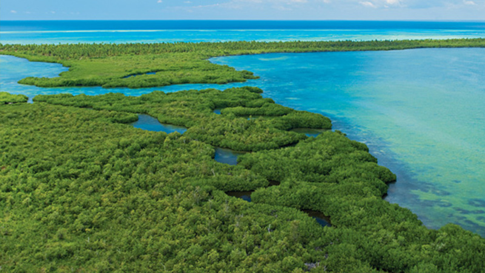

El Parque Nacional del Este, tambien conocido como Parque Nacional Cotubanama, es una de las reservas naturales mas importantes de la Republica Dominicana. Este parque ofrece una rica biodiversidad y paisajes impresionantes.
A continuacion, se muertrauna imagen del Parque Nacional del Este
En el parque, puedes realizar diversas actividades como:
Para mas informacio, puedes visitar los siguientes enlaces:
Este es un video sobre el Parque Nacional del Este
Escucha los sonidos de la naturaleza en el Parque Nacional del Este:
•